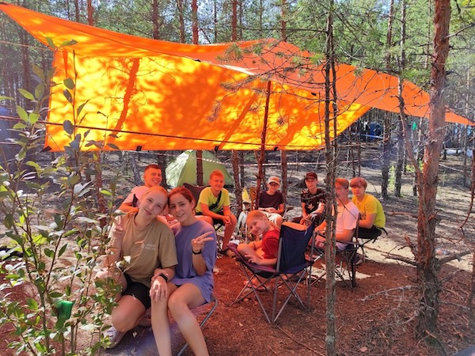
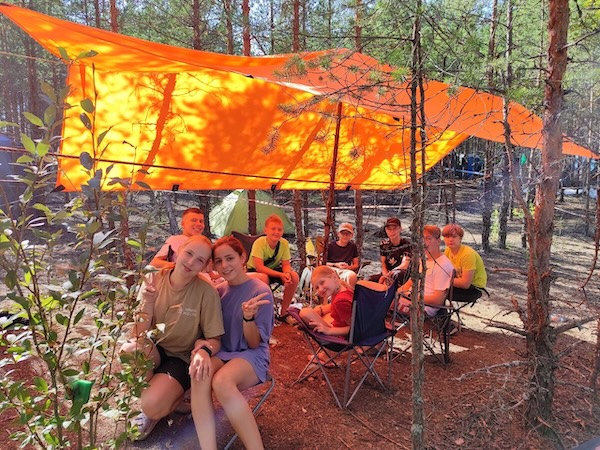
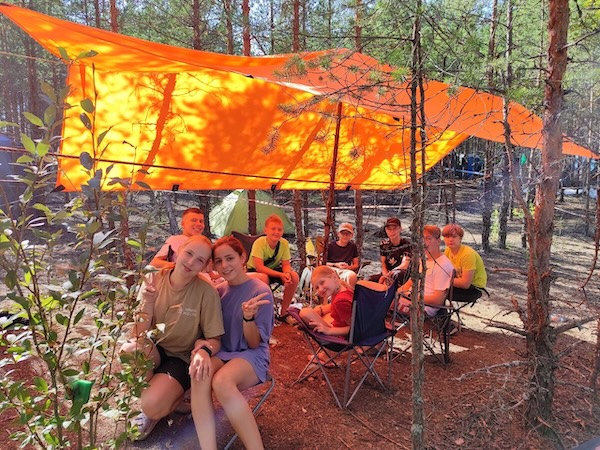

С 25 по 28 июля в Ростовском районе Ярославской области
состоялись традиционные соревнования по спортивному ориентированию "Макушка лета 2024". В этом году эти
соревнования приобрели статус Всероссийских. Мероприятие прошло по уникальным участкам старых заброшенных
карьеров Ростовского района. Местность со сложным микрорельефом и перепадами высот до 40 метров с большим
обилием каменных россыпей и отдельных камней.
В этом году в этих соревнованиях приняло более 1000 человек из 30 регионов России. Обучающиеся "Шахматы на
бегу" ДДТ "Жемчужина" уже традиционно принимали участие как во Всероссийских соревнованиях, так и в фестивале.
Конкуренция очень высока. Что-то у нас выходило, а что-то нет.
25 июля - кросс-классика
26 июля - кросс-лонг
27 июля - кросс-спринт, эстафета
28 июля - кросс-классика, масстарт
Итоги Всероссийских и Межрегиональных соревнований:
Ж14 Смирнова Анастасия - 19, 23, 10 - 1-й этап, 15 места
Ж16 Шапошникова Дарья - 32, 33, 12 - 1-й этап, 25 места
М14 Набатов Семен - 0, 47, 15 по 2-м этапам, 46 места
М14 Семёнов Игорь - 0, 0, 15 по 2-м этапам, 35 места
М16 Кудашев Сергей - 44, 48, 0, 30 места
М16 Баринов Егор - 46, 47, 0, 29 места
М16 Жучков Иван - 45, 49, 0, 38 места
М16 Якобчук Роман - 49, 44, 16 - 1-й этап, 40 места
Итоги фестиваля:
М14-18Б Корнилов Антон - 10, 15, 0, 15 и за 4 дня итог - 17 место
М14-18Б Кабанов Егор - 0, 0, 17, 12; за 4 дня итог - 18 место
М12Б Нечаев Максим - 7, 3, 1, 4; ИТОГ - 1 место
РСД Изотова Елизавета - 1, 3, 4, 0; ИТОГ - 2 место
О2 Изотова Наталия - 5, 4, 3, 4; ИТОГ - 1 место
